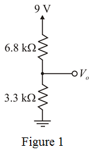
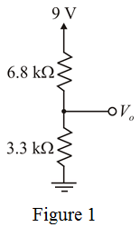
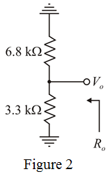
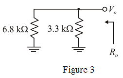

Draw the two-resistor voltage divider circuit with  and resistors.
and resistors.

Draw the two-resistor voltage divider circuit with and resistors.

Calculate the output voltage, using voltage divider rule.
Therefore, the exact measured output voltage, is .
Draw the circuit diagram, to obtain the equivalent resistance.

Draw the modified circuit diagram of Figure 2.

From Figure 1, the output resistance is,
Therefore, output resistance of the potential divider circuit,  is .
is .
Calculate the extreme possible output voltage and resistor values.
The two resistors have tolerance,
Calculate the minimum resistor values.
Thus, the minimum resistances are and .
Calculate the maximum resistor values.

Thus, the maximum resistances are and .
Calculate the minimum output voltage.
Calculate the maximum output voltage.
Therefore, the minimum output voltage, is and maximum output voltage, is .